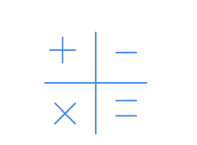

Our Features
Krishipath is an AI-driven tool for rapid soil analysis before agricultural decisions.

AI-Driven Personalized Soil Report
An AI-driven system that analyzes soil data based on your location, delivering personalized reports with crop recommendations, nutrient insights, and suggestions.
KrishiPath Chatbot
Provides instant, personalized farming guidance through an AI chatbot that answers queries related to crops, soil health, fertilizers, and best agricultural practices.
Weather Forecast
Delivers real-time, location-based weather forecasts to help farmers plan irrigation, planting, and harvesting with greater accuracy and confidence.

Fertilizer Cost Estimation
Calculate accurate fertilizer cost based on soil type, crop needs, and land area to help farmers optimize their spending and enhance crop production.